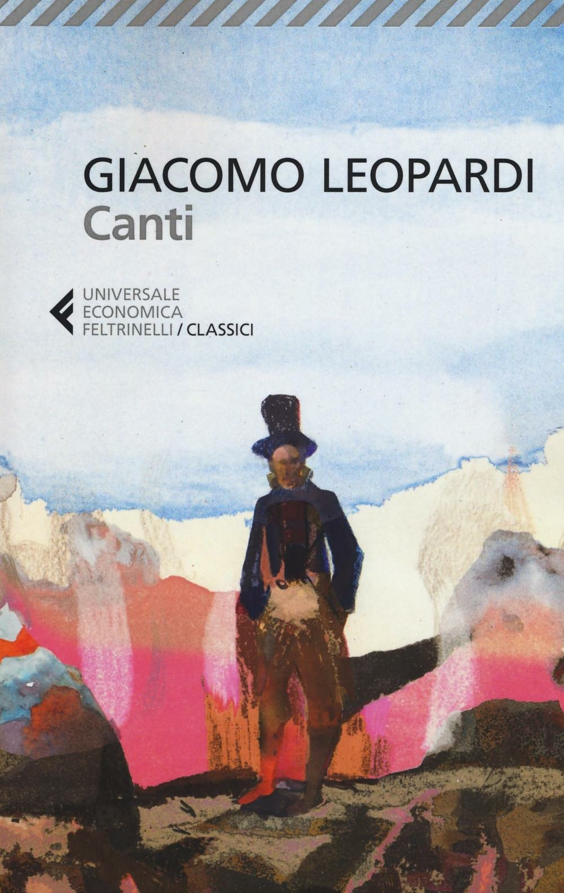

5:51 · 1 OPERA
Passata è la tempesta
Il filo del discorso
Dopo la nevicata del 23 gennaio 2016, l’autore osserva le strade ripulite e il ritorno del sole, richiamando Leopardi. Il paesaggio introduce una riflessione sull’alternanza di crisi e ripresa nella storia, con un riferimento a Vico. A rendere incerto il ritorno alla normalità sarebbero, secondo il discorso, i mezzi distruttivi della modernità e il senso di impotenza collettiva. La conclusione distingue la ricerca scientifica dall’uso tecnico dei suoi risultati e torna all’immagine della tempesta passata.
I libri nel discorso

La quiete dopo la tempesta
Copertina: Feltrinelli, Universale Economica I Classici, 2016 · Canti
Copertina dei Canti, a cura di Ugo Dotti, raccolta che comprende La quiete dopo la tempesta. Non è una pubblicazione autonoma del componimento né un’edizione identificata nel video.
Leopardi e l’incipit Passata è la tempesta sono richiamati durante l’osservazione della neve, poi ripresi nella chiusa.
Passaggio 0:45 ↗ · Fonti e libro ↗